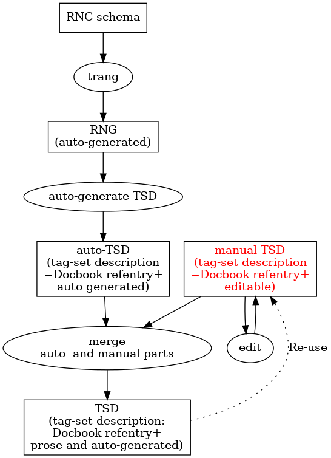

Tag set documentation project
Table of Contents
This document outlines a plan for a workflow to create and maintain documentation for the XML vocabulary used for the XML form of ixml grammars (here called VXML), and the XML vocabulary used for test catalogs by the ixml Community Group.
In its current form this document is not complete and is binding on no one. It is written to serve as a basis for discussion, and to record some thoughts and expectations.
1. Project overview
1.1. Primary deliverables
The central deliverables are reference tag-set documentation (TSD) for the XML vocabularies in question.
The tag-set documentation we wish to create consists of some expository prose and a reference pages for the element types and widely used attributes.
The crucial delivery format is XHTML; other XML vocabularies may be used for maintenance, but is not expected to be of interest to others.
1.2. Requirements
Known requirements and desiderata:
- It must be possible to update the documentation more or less conveniently as the schemas change.
- When the schema changes, human-supplied prose must be carried forward easily.
- Information derivable from the schema should be provided automatically. Specifically: declarations, lists of parents, lists of children, lists of attributes.
- When schema-derived information changes, it is desirable that the user be warned, so that any relevant prose can also be updated.
1.3. Workflow
The intended workflow is described in this diagram:

Figure 1: Workflow plan
That is:
The RNC/RNG schemas are maintained independently.
The test catalog schema is maintained by hand in RNC; the ixml schema is generated automatically in RNG from the ixml grammar, which is maintained by hand. We use trang to make an RNG form of the test catalog schema, and an RNC form of the ixml schema.
Not shown: we use jing -s to create a 'simplified' version of the RNG schema. In some cases, this may require some hand work. (Jing aborts with an error message if asked to simplify some schemas with recursive patterns. The simplified schema also uses some rather opaque names for patterns introduced by Jing.))
An XSLT stylesheet (rng-to-TSD.xsl) auto-generates tag-set documentation for the schema.
If names and short descriptions are provided in the RNG annotation namespace (a:documentation elements), they should be carried over. Otherwise, dummies should be provided.
This stylesheet draws information about the vocabulary from both the RNG schema and the simplified RNG schema.
- An XSLT stylesheet (tsd-merger.xsl) reads the auto-generated
documentation and the previous hand-edited version of the same
documentation, and produces merged output.
- For schema-derived information, the auto-generated documentation is preferred; for other information (basically: the prose), the hand-edited documentation is preferred.
- If any schema-derived information differs between the two sources, the stylesheet should report the fact to the user.
- An XSLT stylesheet (tsd-to-html.xsl) reads the merged tag-set documentation and generates HTML with an appropriate stylesheet (tsd.css).
1.4. Secondary deliverables
We have some secondary deliverables, whose purpose is to occupy the corresponding positions in the workflow.
- Specification of the tag-set documentation vocabulary and conventions to be used. Obvious candidates are Docbook, TEI P3, TEI P5, and an ad hoc custom vocabulary.
- auto-tsd.xsl
- tsd-merger.xsl
- tsd-to-html.xsl
- tsd.css
2. Vocabulary for tag-set documentation
We will use Docbook for the XML form of the tag-set documentation.
Because Docbook's reference entries are rather generic, it may be helpful to specify the pattern to be followed there in more detail. Each refentry element should contain:
- refnamediv
- refdescriptor containing either "(element)" or "(attribute)" or "(pattern)"
- refname with the element type name, attribute name, or pattern name
- refpurpose containing (a) an unabbreviated form of the element type name, (b) a colon, and (c) a short description (typically one line) of the meaning or use of the construct
- refsynopsisdiv
synopsis role="rng-raw"
- info containing the 'raw' Relax NG declaration for the
construct:
- For elements, the rng:element element.
- For attributes, the rng:attribute element.
- For patterns, the rng:define element.
For comparison: this is similar to inclusion of an element declaration from a DTD with parameter entity references unexpanded.
- info containing the 'raw' Relax NG declaration for the
construct:
- synopsis role="rng-simplified" (for elements and attributes only) containing the corresponding declaration from the 'simplified' for the construct. For comparison: this is similar to inclusion of an element declaration from a DTD with all parameter entity references expanded.
- (optional, for elements) synopsis role="structured" containing a structured description in English of the content model of the element. Not required, because in the usual case an English summary can be generated from the simplified RNG without trouble. Not forbidden, because it may be better to do this upstream rather than in the creation of the HTML delivery form.
- (optional, for elements) refsection entitled "Contents" containing a prose description in English of the allowed contents of the element. element. Not required, because not always useful.
- (for attributes) refsection entitled "Data description" with informal prose description of the attribute's datatype.
- (for elements) refsection entitled "Attributes" listing all attributes defined for the element. If the attribute is used on more than one element, then we want just the attribute name with a hyperlink to the reference entry for the attribute; if the attribute is used only on this element, or should be given custom documentation for this parent, a version of the documentation pattern for attributes (perhaps attenuated) should be given.
- (optional) refsection entitled "Remarks" with prose describing relevant information – whatever the user will need to know. For elements and attributes this includes recognition criteria, distinctions from similar elements or attributes, usage.
- refsection entitled "Examples" with prose and examples. In some cases, this may just consist of references to examples given in other reference entries.
- (optional) refsection entitled "Processing expectations".
For example:
<refentry xml:id="element.assert-xml">
<refnamediv>
<refdescriptor>(element)</refdescriptor>
<refname>assert-xml</refname>
<refpurpose>Assert-xml: asserts that the expected
output of a conforming ixml processor will be (or,
in cases of ambiguity, may be) the child element
of the /assert-xml/ element.</refpurpose>
</refnamediv>
<refsynopsisdiv>
<synopsis role="rng-raw">
<info>
<element xmlns="http://relaxng.org/ns/structure/1.0"
xmlns:a="http://relaxng.org/ns/compatibility/annotations/1.0"
name="assert-xml">
<ref name="external-atts"/>
<oneOrMore>
<ref name="any-element"/>
</oneOrMore>
</element>
</info>
</synopsis>
<synopsis role="rng-simplified">
<info>
<element xmlns="http://relaxng.org/ns/structure/1.0"
xmlns:a="http://relaxng.org/ns/compatibility/annotations/1.0"
name="assert-xml">
<group>
<zeroOrMore>
<attribute>
<anyName>
<except>
<nsName ns=""/>
</except>
</anyName>
<text/>
</attribute>
</zeroOrMore>
<oneOrMore>
<ref name="_1"/>
</oneOrMore>
</group>
</element>
</info>
</synopsis>
</refsynopsisdiv>
<refsection>
<title>Contents</title>
<para>Any well-formed XML</para>
</refsection>
<refsection>
<title>Remarks</title>
<para>If the test catalog has a default namespace
declaration, it will be necessary to undeclare it in order
to avoid namespace capture of the asserted result. (IXML
output has no identified namespace.)</para>
<para>When comparing output of an ixml processor to the
asserted result, namespace declarations are to be
ignored.</para>
</refsection>
</refentry>
3. Auto-generation of TSD (auto-tsd.xsl)
[To be drafted.]
4. Merger of TSDs (tsd-merger.xsl)
[To be drafted.]
5. HTML translation and display (tsd-to-html.xsl and tsd.css)
[To be drafted.]
6. Related work
There has been reference documentation for SGML and XML tag sets for about as long as there have been SGML and XML tag sets intended for serious use, but there has been very little standardization on the form of such documentation. Among the examples which have influenced this work are:
Formex (1985). Formex served "formalized exchange of electronic publications". The manual includes expository prose reference documentation includes two lists of data elements, one for a format called CCF (common communications format, an implementation of ISO 2079) and one for an SGML document type definition. The reference page for each element type includes:
- A symbolic representation of the element's generic identifier
(element type name) and attributes e.g.
<AB LA = ...>for the AB (abstract) element with its LA (language) attribute. - A definition (or terse prose description) of the element.
- A data description of the element, describing its content and format.
- A usage note specifying whether the element is mandatory or optional, repeatable or non-repeatable.
- A grouping note specifying what 'groups' the element is part of (this appears to be a list of possible parents or possibly higher-level containers).
- An example (not always present).
For each attribute, the reference page gives:
- A definition (or terse prose description) of the attribute.
- A data description defining the set of possible attribute values.
Not listed here but prominent on each page are cross references to the corresponding CCF data elements.
- A symbolic representation of the element's generic identifier
(element type name) and attributes e.g.
- Maler and El Andaloussi (1996). Maler and El Andaloussi recommend
the following as the "minimal information" for element reference
documentation:
- Short name or actual generic identifier (e.g.
olist). - Full name: descriptive phrase that explains the short name (e.g. "An ordered list of related items.").
- Synopsis: rules for using the element, perhaps including tree diagrams showing possible parents and children.
- Description: purpose, how and where it should be used, recognition criteria, etc.
- Attributes: reference description for each attribute.
- Contents and Contexts (if not already present in the description and if not clearly conveyed by the synopsis).
- Examples.
- Processing notes, including notes on how to work around shortcomings in current tools.
- Short name or actual generic identifier (e.g.
JATS documentation (current). This is a reasonably typical example of the tag-set documentation supplied by at least some commercially active SGML and XML consultants. Reference material for an element includes:
- Generic identifier / element type name
- Full name
- Annotation (to specify which DTDs in a set contain the element)
- Definition
- Remarks
- Related elements
- Content model
- Content description (prose)
- Presentation information (expected styling)
- Examples (with prose commentary)
- Related resources (pointers to other relevant information)
- Source (if adapted from some other tag set)
- Module (in a multi-module vocabulary)
- Revision history
There are similar structures for attributes and parameter entities.
TEI P3 (1994). The auxiliary document type for 'tag set documentation' allows for each element type:
- generic identifier
- full name
- short description (typically a one-liner)
- list of attributes (with reference information for each)
- examples (with commentary and explanation)
- remarks
- information on the part of TEI where the element is defined, the classes it belongs to, and the file(s) it is defined in
- a data description (in prose)
- a list of parents
- a list of children
- the text of the element's declaration
- the text of the element's attribute-list declaration
- hyperlinks to relevant documentation
- a list of equivalent elements (in other vocabularies)
TEI P5 (current) has modified the tag-set documentation of P3 and made many of the elements less specific.
The reference material of Docbook has also had an obvious influence.
7. References
- Formex: formalized exchange of electronic publications, ed. C. Guittet. Luxembourg: Office for Official Publications of the European Communities, 'New Technologies – Project Management' Department, 1985. 243 pp.
- Maler, Eve, and Jeanne El Andaloussi. Developing SGML DTDs: from
text to model to markup. Upper Saddle River, NJ: Prentice Hall PTR,